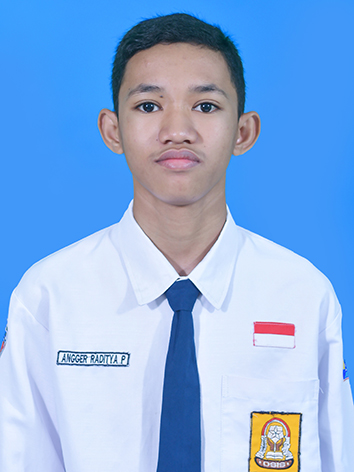

Halo, saya Angger!
Siswa kelas X SMK, calon Junior Web Developer di Kelas Industri UBIG.
Lihat Proyek SayaTentang Saya
Siswa kelas 10 Rekayasa Perangkat Lunak yang berfokus mendalami arsitektur Front-End modern, tata letak CSS Flexbox, serta prinsip Mobile-First Responsive Design standar industri.
Hobi
- Bermain game
- Berlari
- Sepak Bola
Cita-cita
Menjadi Full Stack Web Developer. Langkah yang saya rencanakan:
- Menuntaskan Kelas Industri UBIG sampai Semester 4
- Magang di perusahaan teknologi
- Bekerja sebagai Web Developer
Keahlian
- HTML5 Semantic
- CSS3 Flexbox
- Responsive Design
- Media Queries
- Chrome DevTools
- Git & GitHub
Jadwal Belajar
| Hari | Waktu | Kegiatan |
|---|---|---|
| Senin | 07.00 - 15.00 | Sekolah |
| Selasa | 19.30 - 20.30 | Merekam video dan menulis laporan |
| Rabu | 19.00 - 21.00 | Mengerjakan tugas praktik |
| Kamis | 19.30 - 20.30 | Latihan coding |
| Jumat | 19.30 - 20.30 | Merekam video dan menulis laporan |
| Sabtu | 20.00 - 21.00 | Mengerjakan PR Sekolah |
| Minggu | 05.30 - 07.00 | Jogging |